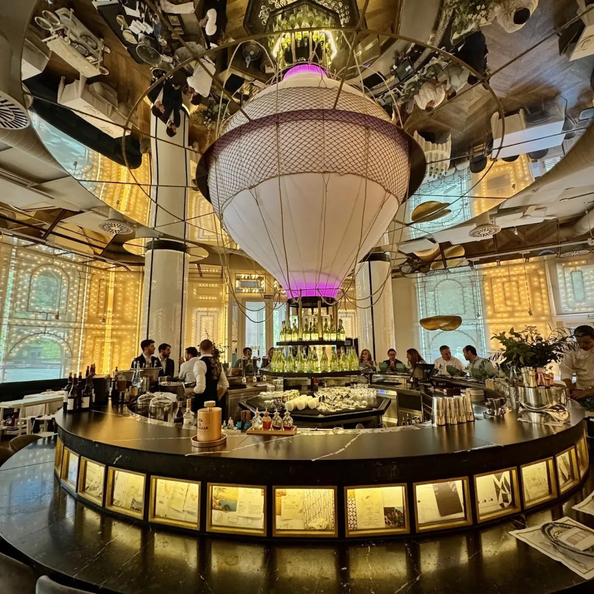
La brasería andaluza de Dani García en pleno Paseo de la Castellana. Producto, fuego, coctelería y un punto de teatro.
En BiBo cocinamos sin corsé: el rigor de la alta cocina con el desparpajo de una brasería andaluza. Producto de temporada, fuego, mucha verdad y la chispa de Dani García. Aquí comer es un espectáculo —y se nota desde que cruzas la puerta.
Una selección de los imprescindibles de BiBo. La carta cambia con la temporada y el mercado —déjate sorprender.
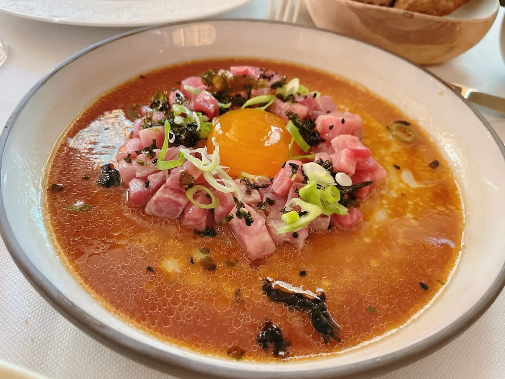
El tartar de la casa sobre un fondo de salmorejo y yema curada. Puro sur.
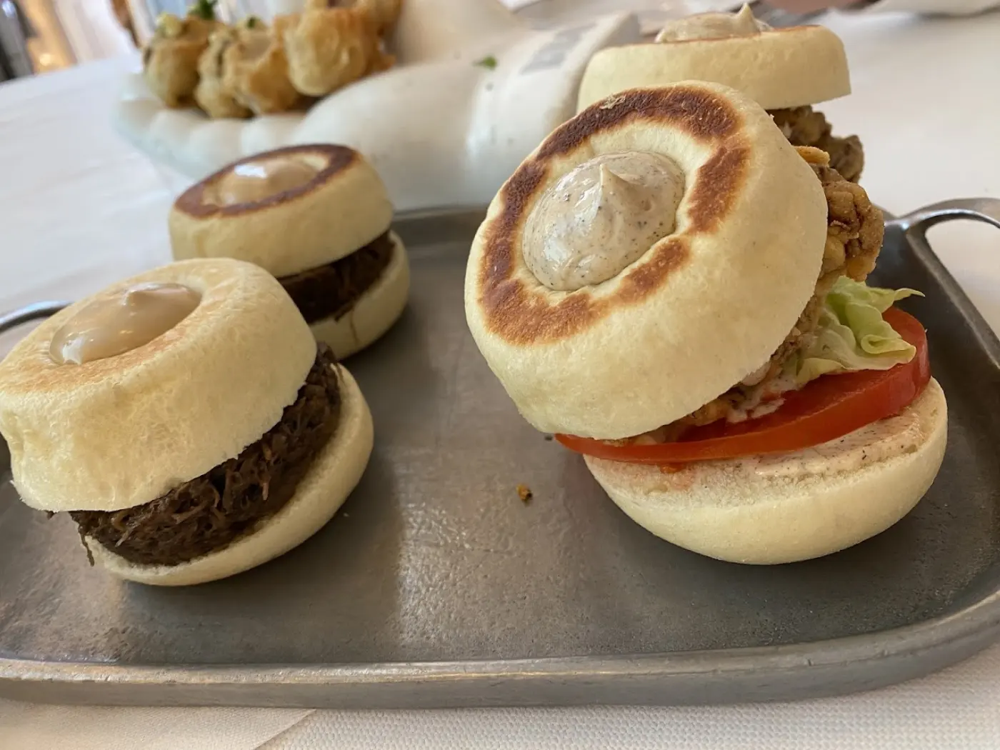
Brioche tierno y rellenos golosos. Imposible pedir solo una.
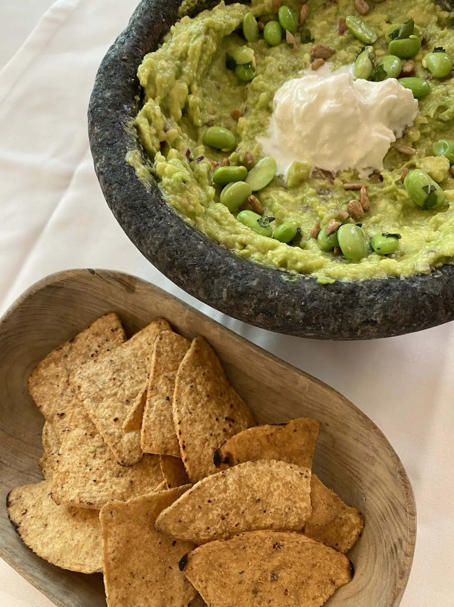
Recién machacado en el molcajete, con su crujiente de maíz.
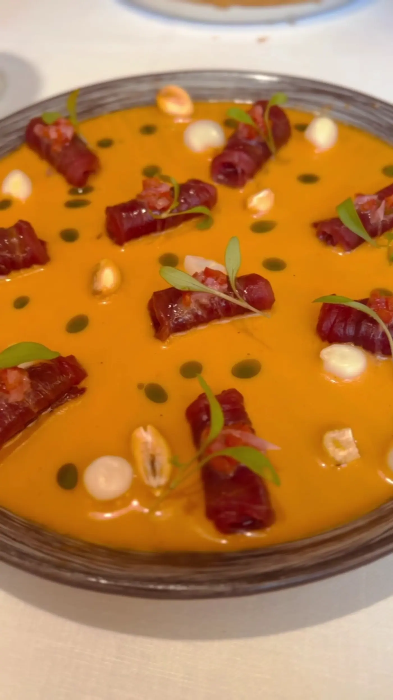
Terciopelo de tomate, aceite de oliva y el toque BiBo.
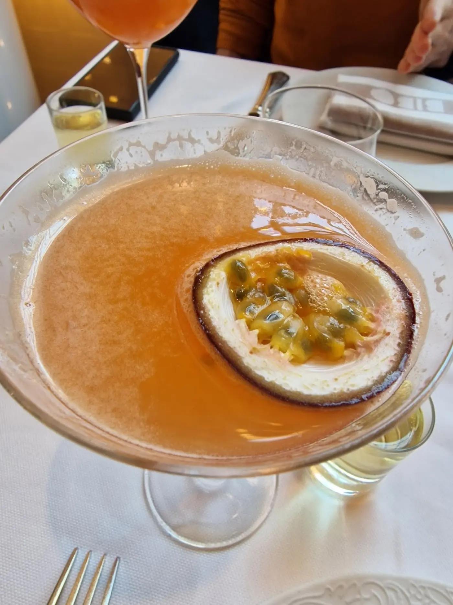
De la fruta de la pasión al mezcal: la barra de BiBo no descansa.
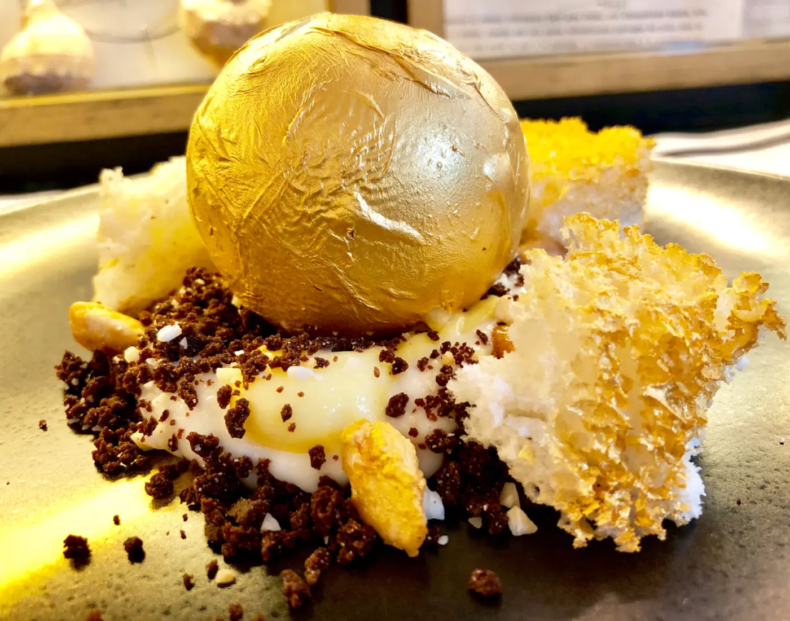
El postre más fotografiado de la casa. Rómpela y disfruta.
…y mucho más, según lo que traiga el mercado.
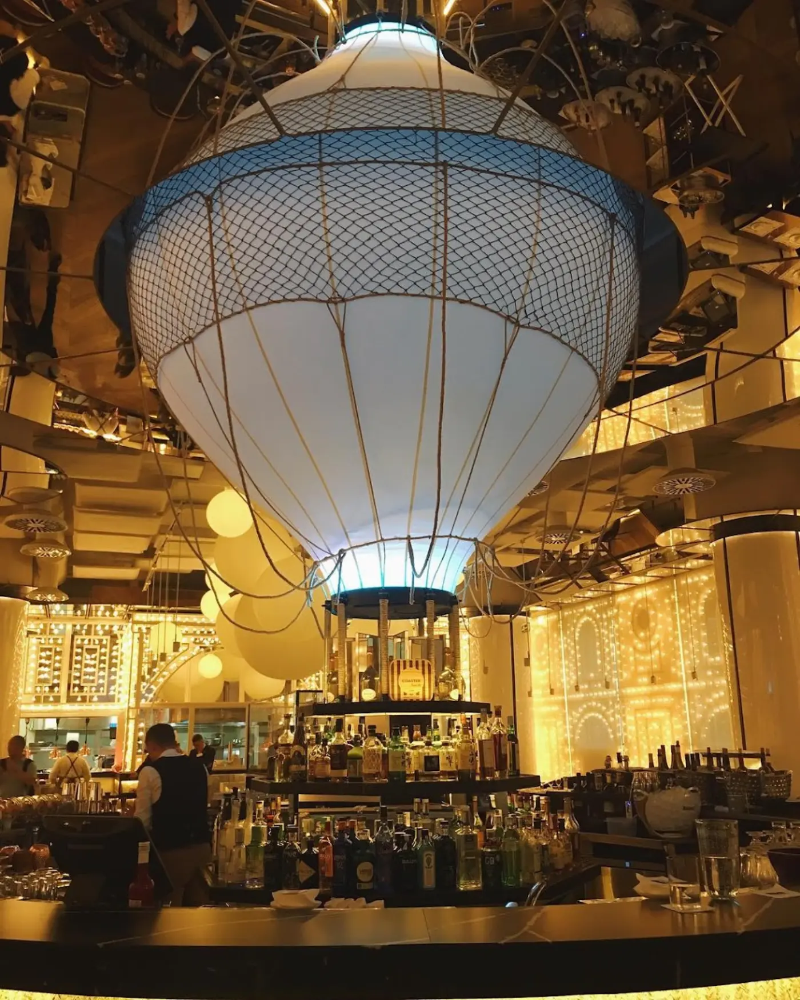
Globo aerostático, miles de bombillas, un atún de bronce y un arco de flores: BiBo es tan plato como decorado. Bienvenido al espectáculo.
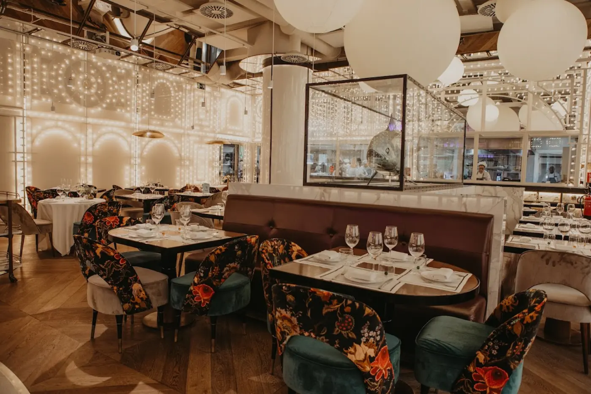
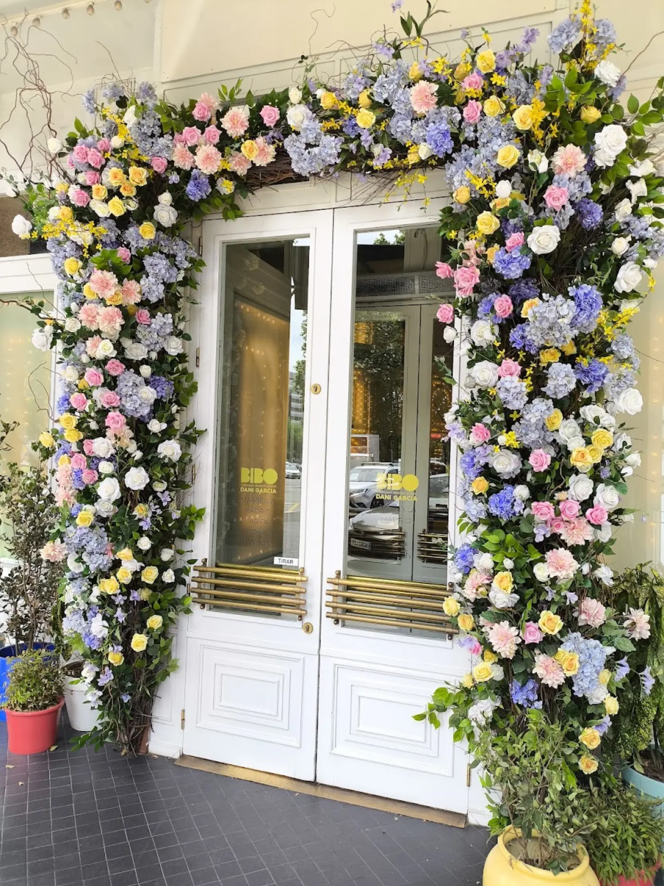
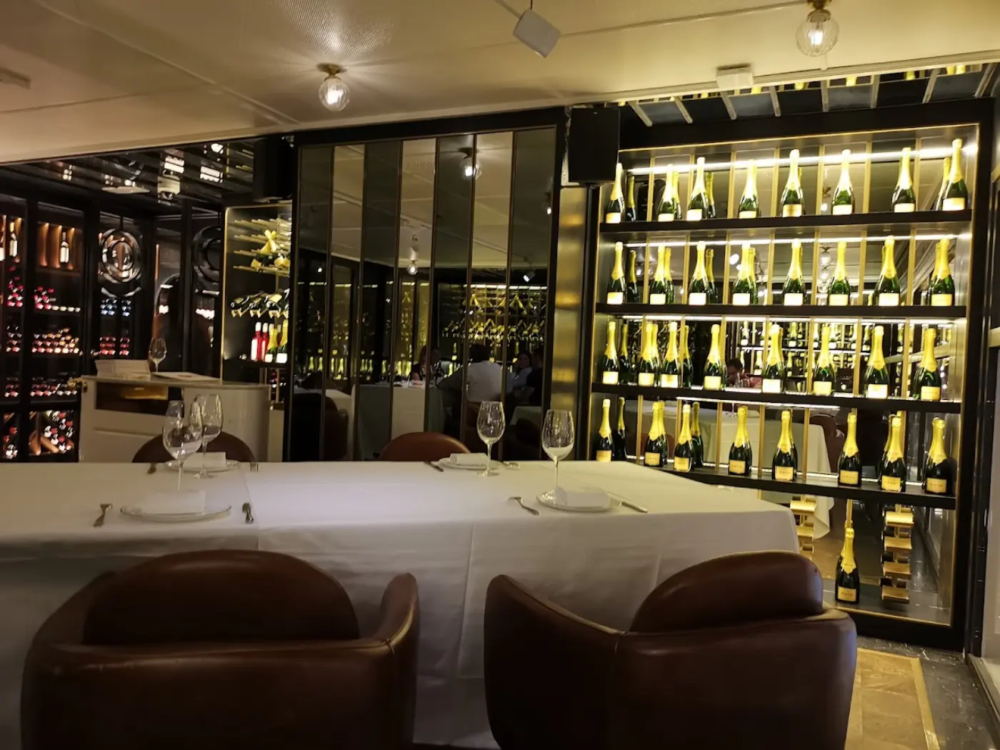
Comidas, cenas, eventos y celebraciones. Reserva tu mesa y déjate llevar por la cocina de Dani García en el corazón de Madrid.
Paseo de la Castellana, 52
28046 Madrid (Salamanca)
* Confírmanos el horario al reservar.